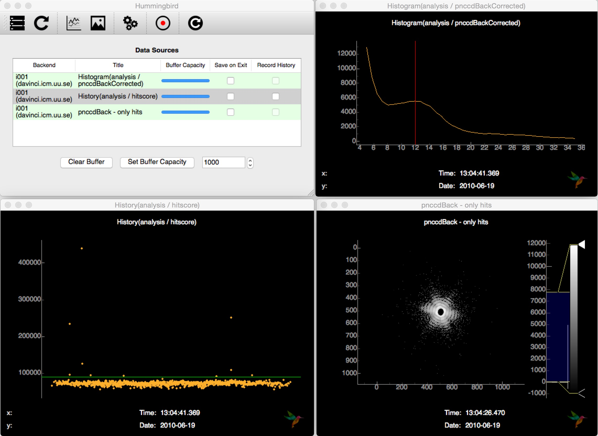

LCLS examples¶
To be able to run from LCLS data you need to have a functioning PSANA environment. There is lots of documentation about how to set up things on the LCLS Data Analysis page.
Tip
If you get strange errors running Hummingbird like syntax errors or
ImportError: No module named psana make sure that you have run the setup
step:
. /reg/g/psdm/etc/ana_env.sh
Hit finding of mimivirus¶
This example is based on diffraction data from mimivirus (cite) published in the CXIDB (entry 30). In order to run this example, it is necessary to download raw data files (XTC format) for a dark run (73) and a diffraction run (92) and put it inside a directory for XTC files.
mimi_dark.py¶
First, we need to get the average dark image running the backend with the following configuration:
import h5py
from hummingbird import analysis, plotting
state = {}
state['Facility'] = 'LCLS'
state['LCLS/DataSource'] = 'exp=amo15010:dir=/reg/d/psdm/AMO/amo15010/xtc:run=73'
dark = 0.
event_number = 0
def onEvent(evt):
global dark, event_number
dark += evt['photonPixelDetectors']['pnccdBackfullFrame'].data
event_number += 1
def end_of_run():
print "Saving average dark image to dark_run73.h5"
with h5py.File('/tmp/amo15010_dark_run73.h5', 'w') as f:
f['mean'] = dark / event_number
This will save the average dark in an HDF5 file named dark_run73.h5.
mimi_hits.py¶
With the average dark image ready, we can run with the following configuration:
from hummingbird import analysis, plotting, utils
state = {}
state['Facility'] = 'LCLS'
state['LCLS/DataSource'] = 'exp=amo15010:dir=/reg/d/psdm/AMO/amo15010/xtc:run=92'
#state['indexing'] = True
state['index_offset'] = 2250
# Load dark frame from file
dark = utils.reader.H5Reader('/tmp/amo15010_dark_run73.h5', 'mean').dataset
# Parameters
adu_photon = 12
threshold = 90000
hist_min = 5
hist_max = 35
hist_bins = 40
def onEvent(evt):
# Processing rate
analysis.event.printProcessingRate()
try:
evt['photonPixelDetectors']['pnccdBackfullFrame']
except KeyError:
return
# Dark calibration
analysis.pixel_detector.subtractImage(evt, 'photonPixelDetectors', 'pnccdBackfullFrame',
dark, outkey='pnccdBackSubtracted')
# Common mode correction
analysis.pixel_detector.commonModePNCCD(evt, 'analysis', 'pnccdBackSubtracted',
outkey='pnccdBackCorrected')
# Plot back detector histogram (to figure out ADU/photon -> aduThreshold)
plotting.line.plotHistogram(evt['analysis']['pnccdBackCorrected'],
hmin=hist_min, hmax=hist_max, bins=hist_bins, vline=adu_photon)
# Hitfinding
analysis.hitfinding.countLitPixels(evt, evt['analysis']['pnccdBackCorrected'],
aduThreshold=adu_photon, hitscoreThreshold=threshold)
# Plot hitscore (to monitor hitfinder -> hitscoreThreshold)
plotting.line.plotHistory(evt['analysis']['litpixel: hitscore'], hline=threshold)
# Plot back detector image for hits only
if bool(evt['analysis']['litpixel: isHit'].data):
plotting.image.plotImage(evt['analysis']['pnccdBackCorrected'],
log=True, name='pnccdBack - only hits')
This performs detector correction (subtraction of average dark, common-mode), does hit finding based on a simple lit pixel counter and sends off detector images of hits as well as diagnostic plots for tuning the hit finder to the frontend.
Connecting to the backend interface and subscribung to the available source, Hummingbird shows hit images and other diagnostic information (hitscore, detector histogram, …):
{kind=link}